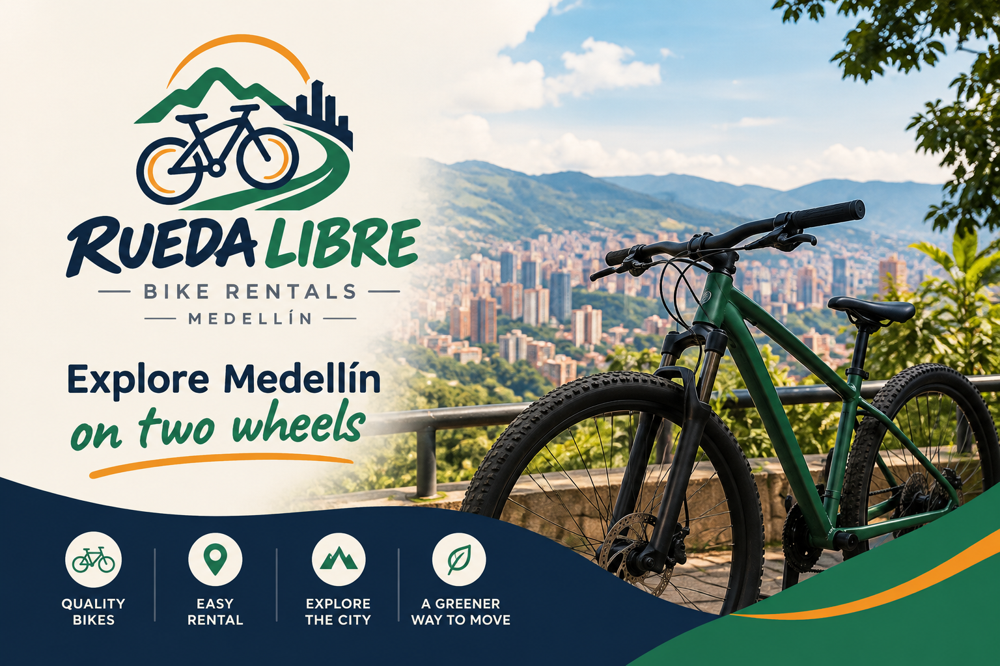

Medellín se recorre mejor en dos ruedas. En Rueda Libre te damos la bici, tú pones las ganas de explorar. Alquila por horas, por un día o por toda tu estadía y conéctate con la ciudad de la eterna primavera a tu ritmo: desde una rodada tranquila por Ciudad del Río y el Poblado, hasta una subida con adrenalina al Alto de Las Palmas. Bicicletas listas, cascos, candado y las mejores rutas recomendadas por locales. ¿Listo para pedalear?
¿Quiénes somos?
En Rueda Libre creemos que Medellín se conoce mejor sobre dos ruedas. Somos un equipo de ciclistas apasionados por nuestra ciudad, y nació de una idea sencilla: que cualquiera, sea local o visitante, pueda recorrerla a su ritmo, con una bici en buen estado y con la tranquilidad de contar con alguien que conoce cada ruta.
Ponemos a tu disposición bicicletas urbanas, de montaña y eléctricas, cascos y candados, además de recorridos guiados por personas que viven aquí y te muestran los rincones que no salen en las guías turísticas. Nuestro taller básico mantiene todo en orden para que solo te preocupes por pedalear.
Nuestra misión es acercarte a la ciudad de la eterna primavera de una forma segura, flexible y cercana.
Nuestros servicios
Alquiler de bicicletas

Elige la bici que mejor se adapte a ti y alquílala por horas, por día o por toda tu estadía. Todas incluyen casco y candado, para que solo te preocupes por disfrutar Medellín a tu ritmo, desde una rodada tranquila por Ciudad del Río hasta una subida con adrenalina al Alto de Las Palmas.
Consejo: lleva tu documento de identidad y revisa la bici antes de salir (frenos, llantas y cambios). Usa siempre el casco y el candado, y no dejes la bici sin asegurar, ni siquiera por un momento.
Recorridos guiados
Descubre la ciudad de la mano de quienes la conocen mejor. Nuestros guías locales te llevan por las rutas más bonitas y seguras, te cuentan la historia de cada lugar y te muestran rincones que no aparecen en las guías turísticas. Ideal si es tu primera vez en Medellín o si prefieres pedalear acompañado.
Consejo: reserva con anticipación, porque los cupos son limitados. Lleva agua, protector solar y ropa cómoda, y llega unos minutos antes para ajustar tu bici con calma.
Taller básico
Si tu bici necesita un ajuste rápido, aquí te ayudamos. Revisamos frenos, cambios y presión de las llantas, lubricamos la cadena y resolvemos pinchazos y otros arreglos sencillos, para que sigas rodando seguro y sin perder tiempo.
Advertencia: el taller cubre arreglos sencillos. Si tu bici tiene daños mayores, como un cuadro doblado o una falla seria en los frenos, no la uses y consulta con un taller especializado.